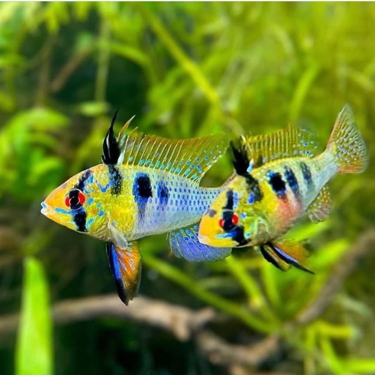

SEU AQUÁRIO, EM EQUILÍBRIO
Encontre o pH ideal
para seus peixes.
Explore a escala, descubra espécies compatíveis e crie um ambiente onde a vida aquática prospera.
Explorar a régua
Água equilibradaVida mais saudável
UM ECOSSISTEMA, MIL POSSIBILIDADES
FERRAMENTA INTERATIVA
Explore a régua de pH
Selecione um ponto da escala para descobrir quais espécies toleram esse nível.
PH SELECIONADO
7,0pH
NeutroEquilíbrio entre acidez e alcalinidade
ÁcidoNeutroAlcalino
5,09,0
ESPÉCIES DE ÁGUA DOCE
Quem combina com sua água?
Peixes com faixa recomendada incluindo pH 7,0.
Carregando dados científicos…
Como usar o AquaPH
Escolha o pH medido no seu aquário. A lista mostra espécies cuja faixa orientativa inclui esse valor. Os dados são referências iniciais e devem ser confirmados para cada espécie e linhagem.
5,0–9,0faixa explorável
100%interativo